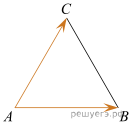
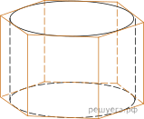
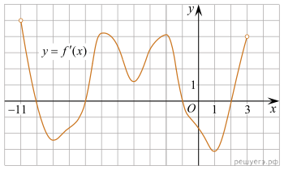
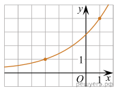

В треугольнике ABC угол C равен 90°, CH - высота, BH = 12, tgA = 2/3.
Найдите AH.
Стороны правильного треугольника ABC равны 2√3. Найдите длину вектора
AB + AC

Найдите площадь боковой поверхности правильной шестиугольной призмы,
описанной около цилиндра, радиус основания которого равен √3, а высота
равна 2.

У Вити в копилке лежит 12 рублёвых, 6 двухрублёвых, 4 пятирублёвых и 3
десятирублёвых монеты. Витя наугад достаёт из копилки одну монету.
Найдите вероятность того, что оставшаяся в копилке сумма составит
более 70 рублей.
При артиллерийской стрельбе автоматическая система делает выстрел по
цели. Если цель не уничтожена, то система делает повторный выстрел.
Выстрелы повторяются до тех пор, пока цель не будет уничтожена.
Вероятность уничтожения некоторой цели при первом выстреле равна 0,4,
а при каждом последующем — 0,6. Сколько выстрелов потребуется для
того, чтобы вероятность уничтожения цели была не менее 0,98?
В ответе укажите наименьшее необходимое количество выстрелов.
В ответе укажите наименьшее необходимое количество выстрелов.
Найдите корень уравнения:
Найдите значение выражения:
На рисунке изображен график производной функции f(x), определенной на
интервале (-11; 3). Найдите промежутки возрастания функции f(x). В
ответе укажите длину наибольшего из них.

Независимое агентство намерено ввести рейтинг новостных
интернет-изданий на основе оценок информативности In, оперативности
Op, объективности публикаций Tr, а также качества сайта Q. Каждый
отдельный показатель - целое число от –2 до 2.
Составители рейтинга считают, что объективность ценится втрое, а информативность публикаций — впятеро дороже, чем оперативность и качество сайта. Таким образом, формула приняла вид
Составители рейтинга считают, что объективность ценится втрое, а информативность публикаций — впятеро дороже, чем оперативность и качество сайта. Таким образом, формула приняла вид
Если по всем четырем показателям какое-то издание получило одну и ту
же оценку, то рейтинг должен совпадать с этой оценкой. Найдите число
A, при котором это условие будет выполняться.
Плиточник планирует уложить 175м2 плитки. Если он будет укладывать на
10м2 в день больше, чем запланировал, то закончит работу на 2 дня
раньше. Сколько квадратных метров плитки в день планирует укладывать
плиточник?
На рисунке изображён график функции f(x)=a^(x+b). Найдите значение х,
при котором f(x) = 16

Найдите наибольшее значение функции y = -2tgX + 4X - π - 3 на отрезке
а) Решите уравнение 2xcosx + x - 4 = 0
б) Укажите корни принадлежащие отрезку
Ответ введите через ";". Для указания пересечения используйте знак "U"
, "π" и "∈"
В прямоугольном параллелепипеде ABCDA1B1C1D1 известны длины рёбер:
AB = 4, BC = 3, AA1 = 2. Точки P и Q — середины рёбер A1B1 и
CC1 соответственно. Плоскость APQ пересекает ребро B1C1 в точке K.
а) Докажите, что B1K : KC1 =" 2 : 1.
а) Докажите, что B1K : KC1 =" 2 : 1.
В ответе используйте знак "√"
Решите неравенство:
В ответе используйте знак "∞" и знак "U"
Антон является владельцем двух заводов в разных городах. На заводах
производится абсолютно одинаковые товары при использовании одинаковых
технологий. Если рабочие на одном из заводов трудятся суммарно t2
часов в неделю, то за эту неделю они производят t единиц товара.
За каждый час работы на заводе, расположенном в первом городе, Антон платит рабочему 250 рублей, а на заводе, расположенном во втором городе, — 200 рублей.
Антон готов выделять 900 000 рублей в неделю на оплату труда рабочих. Какое наибольшее количество единиц товара можно произвести за неделю на этих двух заводах?
За каждый час работы на заводе, расположенном в первом городе, Антон платит рабочему 250 рублей, а на заводе, расположенном во втором городе, — 200 рублей.
Антон готов выделять 900 000 рублей в неделю на оплату труда рабочих. Какое наибольшее количество единиц товара можно произвести за неделю на этих двух заводах?
Квадрат ABCD вписан в окружность. Хорда CE пересекает его диагональ BD
в точке K.
a) Докажите, что CK*CE = AB*CD
б)Найдите отношение CK и KE, если ∠ECD = 15°
б)Найдите отношение CK и KE, если ∠ECD = 15°
В ответ указывайте только пункт Б
Найдите все значения a, при каждом из которых наибольшее значение
функции f(X) = |X - a| - X^2 не меньше 1
В ответе использейте знаки "U" и "∞"
а)Предьставьте число 33\100 в виде суммы нескольких дробей, все
числителе которых - единица, а знаменатели - попарно различные
натуральные числа.
б) Представьте число 15\91 в виде суммы нескольких дробей, все числители которых — единица, а знаменатели — попарно различные натуральные числа.
в)Найдите все возможные пары натуральных чисел m и n, для которых m <= n и 1\m + 1\n = 1\14.
б) Представьте число 15\91 в виде суммы нескольких дробей, все числители которых — единица, а знаменатели — попарно различные натуральные числа.
в)Найдите все возможные пары натуральных чисел m и n, для которых m <= n и 1\m + 1\n = 1\14.